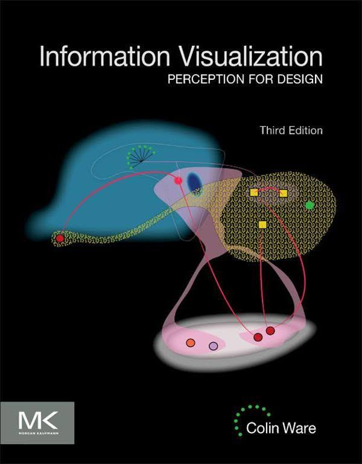
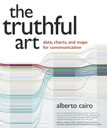
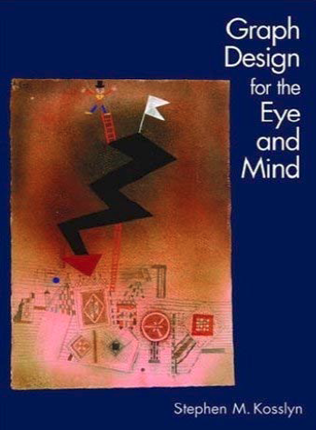
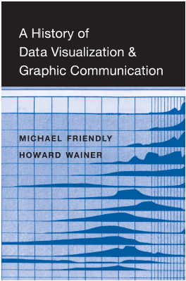
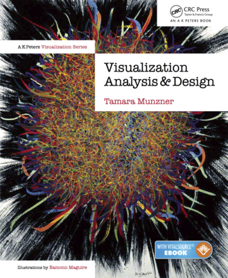
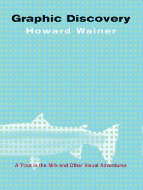
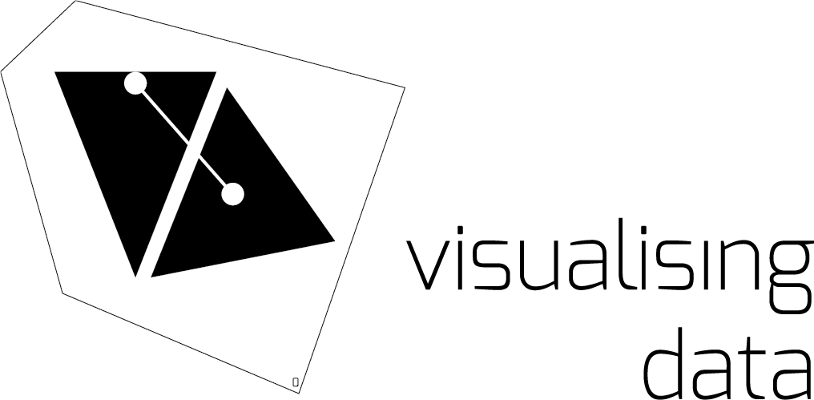
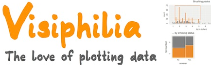
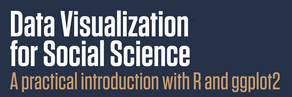
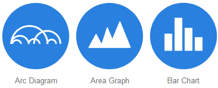

Resources
General, tutorials

- Financial Times Visual Vocabulary. A large cheatsheet poster for fining types of graphs to use for different purposes.
- Checklist For Good Graphical Practice
Twenty rules for good graphics. This post by Rob Hyndman, describes some best practices for producing graphs for journal publication.
British Ecological Society’s Guide to Reproducible Science. The guide proposes a simple reproducible project workflow, and a guide to organizing projects for reproducibility. The Programming section provides concrete tips and traps to avoid (example: use relative, not absolute pathnames), and the Reproducible Reports section provides a step-by-step guide for generating reports with R Markdown.
Amazon Mechanical Turk Guide for Social Scientists A guide for setting up online data collection tasks on Amazon Mechanical Turk
Books
Main texts
|  |
Colin Ware,
Information Visualization, 3rd Ed.
. What perceptual science has to say about data visualization, from a bottom-up perspective.
Course notes at http://ccom.unh.edu/vislab/VisCourse/index.html |
|  |
Alberto Cairo,
The Truthful Art
. Information graphics from a communication perspective.
Blog: http://www.thefunctionalart.com/ |
|  | Steven Kosslyn, Graph Design for the Eye and Mind . A cognitive psychologist looks at graphs and presents some do's and don'ts. |
More books I recommend
|  | Michael Frriendly & Howard Wainer, A History of Data Visualization and Graphic Communicantion . Everything you've ever wanted to know about the history of data visualization: Who did what, when and why.. |

|
Claus Wilke, Fundamentals of Data Visualization . Well thought out, a wide range of topics, good practical advice, lots of examples. It was written entirely using R Studio and the `bookdown` package, and now online. |
|  |
Tamara Munzner,
Visualization Analysis & Design
. An attractive new book combining computer science and design perspectives.
Web page at http://www.cs.ubc.ca/~tmm/vadbook/ with lots of illustrations and lectures |
|  | Howard Wainer, Graphic discovery: a trout in the milk and other visual adventures . A collection of essays on the history of graphics and other topics. |
Blogs & Web Resources
The following blogs are a rich source of information on visual design, data graphics and the history of data visualization.
| My web site, http://datavis.ca . Contains the Milestone Project on the history of data vis, the Data Visualization gallery links to books, papers, courses, and software. | |
| Nathan Yau, flowingdata.com/ A large number of blog posts illustrating data visualization methods with tutorials on how do do these with R and other software. | |
| Kaiser Fung, http://junkcharts.typepad.com/ Fung discusses a variety of data displays and how they can be improved. | |
| A podcast on data visualization with Enrico Bertini and Moritz Stefaner, http://datastori.es/ . Interviews with over 100 graphic designers & developers. | |
| Kantar Information is Beautiful Awards https://www.informationisbeautifulawards.com Celebrates excellence and beauty in data visualizations,infographics, interactives & information art. | |
| Raymond Andrews, http://infowetrust.com/ A visual storyteller delights with graphic stories from the history of data visualization. | |
|  | Andy Kirk, https://www.visualisingdata.com/blog/ Among other things, Kirk provides a monthly digest of his picks for the Best in Data Visualization. |
Additional session resources
These are additional resources related to weekly topics, many of which were originally suggested by Borzu Talaie (Thx!). Feel free to suggest other topics that can be added to these lists.
Session 1: Overview
Graphical Gaffes by Ben Jones. A collection of What Not to Do in Graphics.
Take a look at some of the visualizations selected by Andy Kirk as his picks for the Best visualizations in August 2021
Session 2: Varieties Data Visualization

- 30 Day Chart Challenge This collection, currated by Cederic Scherer, contains examples of graphs and charts designed to show visualizations classified by type and topic. But, more generally, follow #30DayChartChallenge on Twitter.
Session 3: History of Data Visualization
Album de Statistique Graphique A blog post by Richard Brath picks out some features in this remarkable series of statistical albums
Out of Sight, Out of Mind A great example in storytelling with data
Journalism in the Age of Data A very interesting video report on data as a storytelling medium – a bit outdated, but still holds some interesting content. (There is an annotated version, which requires Flashplayer)
Douglas Engelbert Inventor of the computer mouse as a pointing system. Also check out his 1968 demo nicknamed: The Mother of All Demos.
Katharine Harmon The Map as Art
She also has another good book on maps called: You Are Here
Session 4: Graphical perception
Captain Disillusion video CD Color. “The most important thing to know about color is that it doesn’t exist.”
Emil Hvitfeldt has compiled a Comprehensive list of color palettes available in R with examples of each.
Session 5: Human Factors
How do we read pie charts? You might think you read pie charts by angle, but you don’t. Robert Kosera lays out some evidence in this Youtube video The Science of Pie Charts.
Alan Lundgard & Arvind Satyanarayan Accessible Visualization via Natural Language Descriptions: A Four-Level Model of Semantic Content. Considers how to write figure captions or alt-text to better communicate and contextualize graph insights, and to improve their accessibility for readers with disabilities.
Nancy Organ An Incomplete Guide to Accessible Data Visualization
Dataviz Accessibility Resources lists a wealth of papers, blogs, software tools, etc. on data visualization accessibility
Accessible Visualization: Design Space, Opportunities, and Challenges. This paper gives a comprehensive survey of papers published for the last 20 years on visualization accessibility.
Session 6: The Language of Graphs
Claus Wilke, SDS 375/395 Data Visualization in R This is a comprehensive course in R graphics (mainly ggplot2 & friends), based on Wilke’s Fundamentals of Data Visualization.
Jer Thorp. National Geographic video: Numbers that paint the picture. Look for his OOH/AAH metaphors at the 8:20 marker.
Cole Nussbaumer: Storytelling with Data. For those interested in the narrative side of Dataviz
Raw graphics. A very good online resource to easily poke at your datasets.
The Johnny Cash Project. A very interesting project that used crowdsourcing like Amazon Mechanical Turk for its creative content.
Session 7
The Secret Rules of Modern Living: Algorithms. A documentary on Netflix.
Adding other sensory attributions to data: Listen to wikipedia. Use Chrome web browser and make sure you enable sound in the top menu.
Data Visualization and D3 A very good online resource (although a bit pricy) if you are interested in learning D3. Here is the course syllabus.
Session 10
Nate Silver is the guy behind the FiveThirtyEight website. Trained as a statistician, he predicted Obama’s win in 2008! See his book: The Signal and the Noise: Why So Many Predictions Fail – but Some Don’t
Swing-O-Matic: How Demographics Will Shape The 2016 Election
Krisztina Szucs – a quick analysis on two of her projects by Angela Nobel Borzu: I really like her work on the frequency of the spread of diseases
How Music Taste Evolved (by the Pudding). Borzu: In my opinion, this project is one of the most engaging dataviz projects in terms of storytelling. Enjoy!
Hans Rosling: 200 years in 4 minutes – another example/approach in storytelling with data
Software for graphics in R
|  | At http://visiphilia.org/ statisticians Di Cook and Heike Hofmann from Iowa State University blog about data visualization topics, using R |
| https://www.r-bloggers.com/ A large collection of posts on R news and tutorials by over 750 R bloggers. | |
|  | Kieran Healy, http://socviz.co/ Data Visualization for Social Science: A practical introduction with R and ggplot2. |
|  | DataVis Catalog, https://datavizcatalogue.com/blog/ Extended discussions of variations of a given chart type. |
R
Happy git and github for the useR provides a good overview of how to use Git and GitHub in conjunction with an R-based workflow.
A primer on web scraping with R by Simon Munzert. Includes slides from a workshop and lots of links to resources.
Flipbook introduction to ggplot2 by Gina Reynolds. An introduction to
ggplot2showing the effect of each bit of code for a plot.
Presentation/project ideas
Here are a few ideas (in no particular order) for the course presentation or project:
Winners of the ASA Police Data Challenge student visualization contest. The American Statistical Association teamed up with the Police Data Initiative, which provides open data from local law enforcement agencies in the US, to create a competition for high school and college students to analyze crime data from Baltimore, Seattle and Cincinnati. Explore some data and create your own visualization.
Somewhat related, OpenIntro maintains a large set of datasets, one of which details Fatal police shootings by on-duty officers since Jan. 2015. Collected by the Washington Post. This includes 6400 incidents, with many variables on the nature of the incident and the age, race, sex of the victim.
The 50 Most Influential Living Psychologists. This page gives brief biographies of a collection of 50 living psychologists called the most influential in the world. How can this collection be visualized in terms of their attributes (area of psychology, age, gender, …)? You’ll need to scrape the data from the web page. Here is a start on that:
library(rvest)
library(stringr)
url <- "https://thebestschools.org/features/most-influential-psychologists-world/"
page <- read_html(url)
items <- page %>% html_nodes("h3") %>% html_text()
items <- items[grep("More", items, invert=TRUE)]
items <- sub("^\\d+\\. ", "", items, perl=TRUE)Graphical inference for Info Vis. Wickham et al. (2010) describe a graphical “lineup” technique for doing statistical inference with graphs and human judges. Do a literature review of this topic and design a possible experimental use of this technique. There is an R package, nullabor with this vignette for contstructing such graphical displays.
Best practices for research presentations using data graphics: How to best communicate your results in a conference presentation or in a poster?
- Redesigning maps for usability: One of the best early examples is Harry Beck’s London Tube Map, which has become iconic. But there have been many other additions to the literature on this topic. Some local examples of maps that could use a design-overhaul are:
- The Toronto PATH map, showing the 30 km of walkways underneath a large part of the dpowntown core.
- The York Campus Map, showing all buildings on the Keele Campus.
Language of Graphs: Characteristics of different computer languages for graphics, including aspects of syntax, semantics and expressive power. See me for some pointers and references.
Online experiments: More and more psychologists are using computer-controlled methods of data collection, either with specific software for personal computers or with web-based or cloud-based application. Some of these use graphics, either for stimulus presentation or for displaying results.
Measures of graph literacy: In many studies of graph perception, it is useful to measure a construct of ability to understand graphic information (“graph literacy”). What is the state of the art on this topic?
Copyright © 2018 Michael Friendly. All rights reserved.
friendly AT yorku DOT ca
 orcid.org/0000-0002-3237-0941
orcid.org/0000-0002-3237-0941